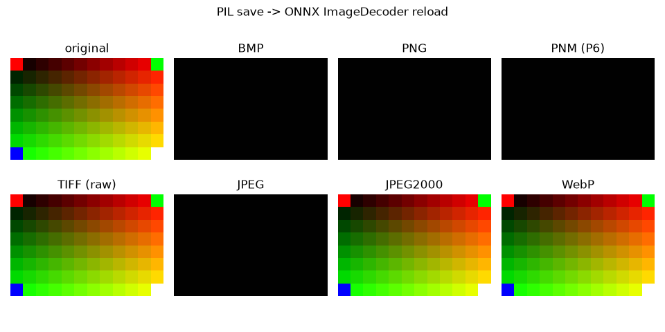

Note
Go to the end to download the full example code.
Round-trip every image format: save with PIL, reload with ONNX#
This example builds a small synthetic RGB image, saves it to memory in every
image format supported by PIL (Pillow), and reloads each encoded
bytestream with the ONNX ImageDecoder operator provided by
onnx-light-kernel-images.
The kernels are registered with the onnx-light dispatch table
(register_image_kernels()) and then exercised through a one-node
ImageDecoder ONNX model executed by onnx-light’s
ReferenceEvaluator. The encoded file bytes
are fed as a uint8 input tensor and the decoded channel-last
(H, W, C) uint8 image is read back from the output.
For lossless formats (BMP, PNG, PNM/PPM, and TIFF — including the PackBits,
LZW and Deflate compressions) the decoded pixels must match the original array
exactly. For the remaining formats (JPEG, JPEG2000 and WebP) the example
reports the mean absolute error instead of asserting an exact match: JPEG is
lossy, while JPEG2000 and WebP are decoded through the optional libopenjp2
/ libwebp runtime libraries and may apply a color transform. When those
libraries are not available on the machine the decoder returns an empty
(0, 0, C) matrix (as described by the ONNX ImageDecoder schema) and the
example simply notes it.
The decoder is driven through a small ONNX model:
node = helper.make_node("ImageDecoder", ["encoded"], ["image"], pixel_format="RGB")
...
sess = ReferenceEvaluator(model)
(image,) = sess.run(None, {"encoded": np.frombuffer(encoded_bytes, np.uint8)})
Setup#
Register the kernels once, build a one-node ImageDecoder model, and create
a deterministic test image with a few fully-saturated colors so that lossless
round-trips can be compared exactly.
import io
import numpy as np
from PIL import Image
from onnx_light.onnx import TensorProto, helper
from onnx_light.onnx.reference import ReferenceEvaluator
from onnx_light_kernel_images.onnx_py._imgpykernels import register_image_kernels
register_image_kernels()
def make_image_decoder_model(pixel_format="RGB"):
"""Builds a single-node ``ImageDecoder`` ONNX model for ``pixel_format``."""
node = helper.make_node("ImageDecoder", ["encoded"], ["image"], pixel_format=pixel_format)
graph = helper.make_graph(
[node],
"image_decoder",
[helper.make_tensor_value_info("encoded", TensorProto.UINT8, [None])],
[helper.make_tensor_value_info("image", TensorProto.UINT8, [None, None, None])],
)
return helper.make_model(graph, opset_imports=[helper.make_opsetid("", 20)])
sess = ReferenceEvaluator(make_image_decoder_model("RGB"))
def decode_image(encoded):
"""Decodes ``encoded`` bytes through the ImageDecoder model."""
(image,) = sess.run(None, {"encoded": np.frombuffer(encoded, dtype=np.uint8)})
return image
height, width = 8, 12
original = np.zeros((height, width, 3), dtype=np.uint8)
original[:, :, 0] = np.linspace(0, 255, width, dtype=np.uint8) # red ramp
original[:, :, 1] = np.linspace(0, 255, height, dtype=np.uint8)[:, None] # green ramp
original[0, 0] = (255, 0, 0)
original[0, -1] = (0, 255, 0)
original[-1, 0] = (0, 0, 255)
original[-1, -1] = (255, 255, 255)
pil_image = Image.fromarray(original, "RGB")
Encode with PIL, decode with the ONNX model#
Each entry pairs a Pillow save format (and optional keyword arguments)
with a flag telling whether the round-trip is expected to be lossless.
cases = [
("BMP", {"format": "BMP"}, True),
("PNG", {"format": "PNG"}, True),
("PNM (P6)", {"format": "PPM"}, True),
("TIFF (raw)", {"format": "TIFF", "compression": "raw"}, True),
("TIFF (packbits)", {"format": "TIFF", "compression": "packbits"}, True),
("TIFF (lzw)", {"format": "TIFF", "compression": "tiff_lzw"}, True),
("TIFF (deflate)", {"format": "TIFF", "compression": "tiff_adobe_deflate"}, True),
("JPEG", {"format": "JPEG", "quality": 95}, False),
("JPEG2000", {"format": "JPEG2000"}, False),
("WebP", {"format": "WEBP", "lossless": True}, False),
]
results = []
for name, save_kwargs, lossless in cases:
buffer = io.BytesIO()
try:
pil_image.save(buffer, **save_kwargs)
except (KeyError, OSError) as exc:
# Pillow was built without support for this format on this machine.
print(f"{name:<18} skipped (Pillow cannot save it: {exc})")
continue
encoded = buffer.getvalue()
decoded = decode_image(encoded)
if decoded.shape[0] == 0:
# The optional runtime library (libopenjp2 / libwebp) is unavailable,
# so the ImageDecoder returned the schema-mandated empty matrix.
print(f"{name:<18} runtime decoder unavailable -> empty {decoded.shape}")
continue
if lossless:
assert decoded.shape == original.shape, (name, decoded.shape)
assert np.array_equal(decoded, original), name
print(f"{name:<18} {len(encoded):>5} bytes -> {decoded.shape} exact match")
else:
mae = float(np.abs(decoded.astype(int) - original.astype(int)).mean())
print(f"{name:<18} {len(encoded):>5} bytes -> {decoded.shape} MAE={mae:.2f}")
results.append((name, decoded))
BMP 342 bytes -> (8, 12, 3) exact match
PNG 114 bytes -> (8, 12, 3) exact match
PNM (P6) 300 bytes -> (8, 12, 3) exact match
TIFF (raw) 428 bytes -> (8, 12, 3) exact match
TIFF (packbits) runtime decoder unavailable -> empty (0, 0, 3)
TIFF (lzw) runtime decoder unavailable -> empty (0, 0, 3)
TIFF (deflate) runtime decoder unavailable -> empty (0, 0, 3)
JPEG 767 bytes -> (8, 12, 3) MAE=11.19
JPEG2000 435 bytes -> (8, 12, 3) MAE=0.00
WebP 88 bytes -> (8, 12, 3) MAE=0.00
Visualize the decoded images#
Every decoded array is a channel-last (H, W, C) uint8 image, so it can
be handed straight to matplotlib.pyplot.imshow().
import matplotlib.pyplot as plt
ncols = 4
nrows = (len(results) + 1 + ncols - 1) // ncols
fig, axes = plt.subplots(nrows, ncols, figsize=(2.4 * ncols, 2.4 * nrows))
axes = np.atleast_1d(axes).ravel()
axes[0].imshow(original)
axes[0].set_title("original")
for ax, (name, decoded) in zip(axes[1:], results, strict=False):
ax.imshow(decoded)
ax.set_title(name)
for ax in axes:
ax.set_axis_off()
fig.suptitle("PIL save -> ONNX ImageDecoder reload")
fig.tight_layout()
plt.show()

ONNX ImageDecoder reload, original, BMP, PNG, PNM (P6), TIFF (raw), JPEG, JPEG2000, WebP" class = "sphx-glr-single-img"/>Total running time of the script: (0 minutes 0.347 seconds)